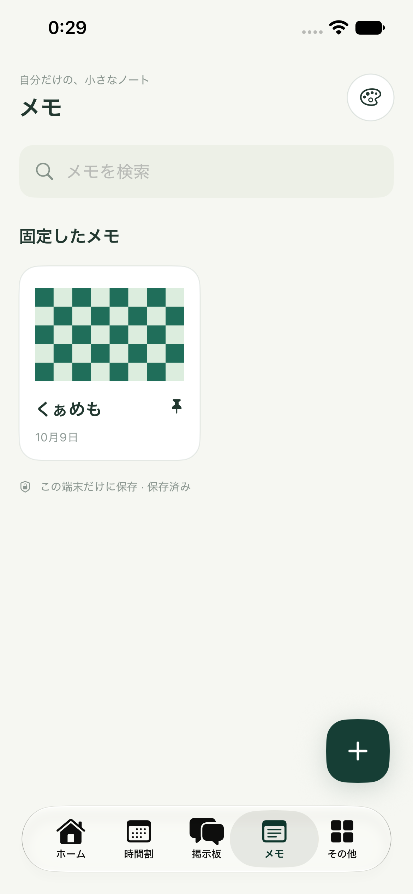
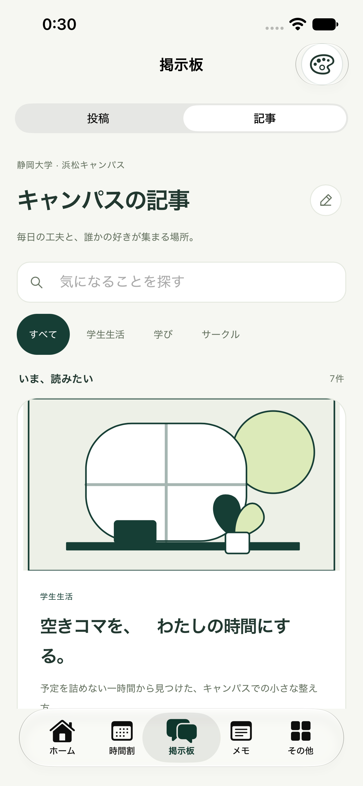
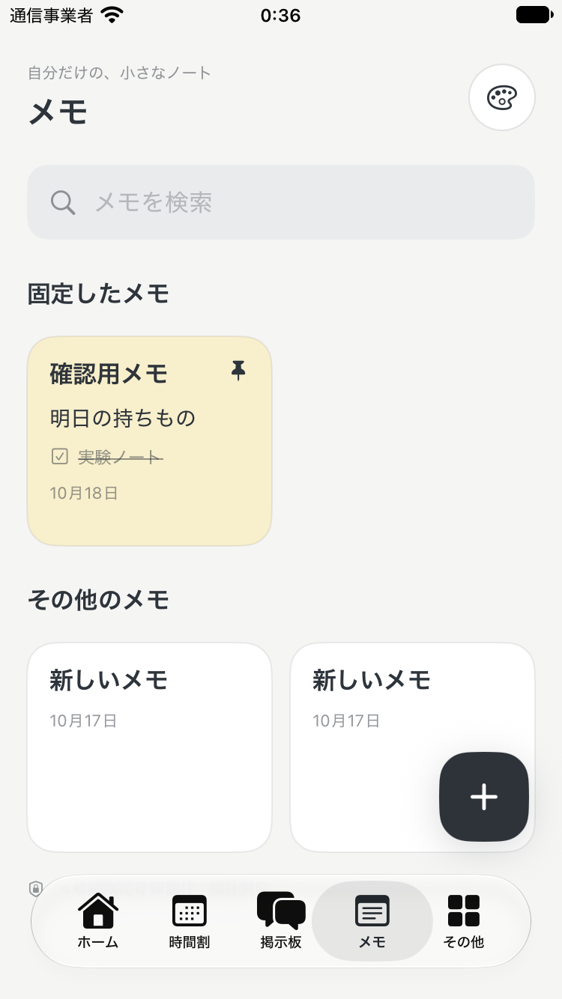

下部は「ホーム／時間割／掲示板／メモ／その他」。記事の下書きと既存メモを引き継ぎます。以下は新構成の画面案で、内容は見本です。
掲示板に「投稿」と「記事」をまとめる。
掲示板
◉投稿記事
CAMPUS JOURNAL
キャンパスの知恵を、
読みものに。
⌕ 記事を探す
大学生活の、小さなヒント。サークル・学び・学生生活
新しい記事を読む →
新しい記事を読む →
おすすめの記事
1年生のうちに知っておきたいこと学生生活 · 5分で読める
既存の記事一覧・詳細・執筆をここから利用
自分のメモは、カードでひと目に。
自分だけの、小さなノート
メモ
＋⌕ メモを検索
固定したメモ
明日の持ちもの ♧☑ 学生証
☐ 実験ノート
☐ USBメモリ
☐ 実験ノート
☐ USBメモリ
研究室見学金曜の午後に相談。
聞きたいことをまとめておく。
聞きたいことをまとめておく。
すべてのメモ
レポートのメモ考察は結果とのつながりを意識する。
気になった本図書館で探す。
たった今 更新
たった今 更新
開いてすぐ書く。チェックや色も軽やかに。
‹ メモ♧ ⋯ 完了
端末に保存 · 保存済み
明日の持ちもの
午前の実験に必要なもの。
☑ 学生証
☐ 実験ノート
☐ USBメモリ
＋ 項目を追加
▧ ☑ ◉ 画像・チェックリスト・色
本文だけのメモも、そのまま書けます。
講義からの入口と、元の詳細への戻り方を保つ。
「この講義の掲示板」は投稿へ、「関連記事」は記事へ。入力途中の内容を切替で失わないようにします。
オフラインで保存して、これまでのメモも使える。
本文・画像・固定にチェック項目と色を追加。旧データは既定値で読み込み、保存失敗を通知し入力を保持。削除の確認と30秒の取消を残します。
既存の保存情報を保護する。
小画面と再起動まで確かめる。
共通4テーマ、375pt、Core/記事/掲示板回帰、ビルド、独立レビューとシミュレーター操作を確認。
今回は端末内で使う、シンプルなメモです。
Google Keep連携・クラウド同期・共同編集・リマインダーは含めません。掲示板の配信範囲は既存の操作デモから変更しません。
未解決事項
今回の実装を止める事項はありません。
関連資料
既存掲示板の仕様 · 既存記事の仕様アプリへ反映しました
掲示板内の記事切替とメモタブを実装。Core28件・記事回帰・掲示板45項目・Simulatorビルド・独立レビューが成功しました。既存データを保持し、375ptで作成したメモの本文・色・チェック状態・固定が再起動後も残ることを確認しています。



実IME変換中の切替、VoiceOver、文字サイズ全組合せ、新規写真選択の全経路は未確認です。詳しい検証範囲は仕様正本を参照してください。